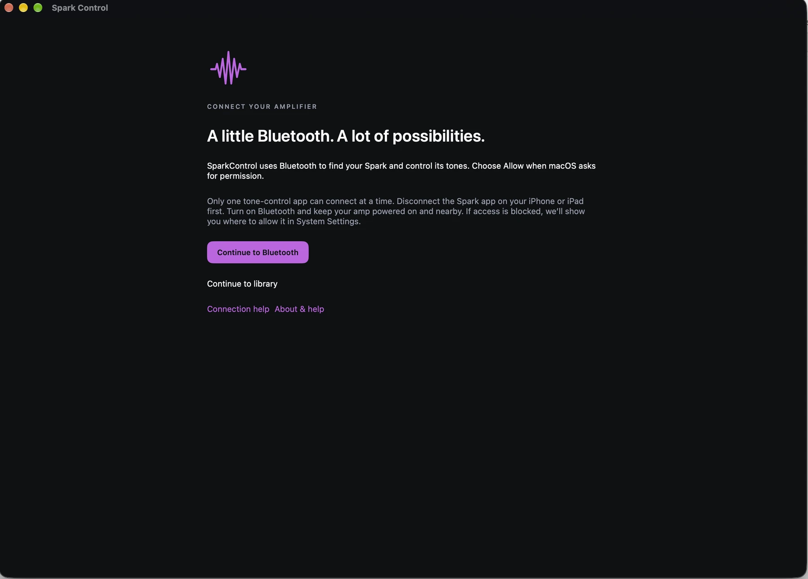

We’re here to help
Let’s get you playing.
For questions, bug reports, or feature suggestions, email the app’s developer, Avner Barr.
Include your app version, macOS version, amplifier model, and what you expected to happen. Never send passwords, access tokens, or payment details.
Common questions
My amplifier won’t connect or stops responding.
Turn on Bluetooth on your Mac and keep the amp powered on and nearby. In System Settings → Privacy & Security → Bluetooth, allow SparkControl if access was denied.
Disconnect tone control in the Spark app on your iPhone or iPad before connecting from your Mac. Only one tone-control app can control the amp at a time. Bluetooth music playback is a separate connection.
If Bluetooth connects but tone control does not respond, use Retry tone control or Reconnect in the app. If needed, restart the amplifier. Open Help → Connection Help for connection details.

What works without an amp or account?
Your local library works without an amplifier. Choose Explore demo to try the editor and other workflows using sample presets and simulated actions. Demo does not produce guitar audio, contact online services, or change your real library.
ToneCloud browsing does not require sign-in. Spark AI requires a Positive Grid account and internet access.
How do I organize styles and groups?
In the Tone library, drag a tone onto a style or group in the sidebar. A tone can have multiple tags without creating extra copies. Use a tone’s actions menu to change its tags. Use a style’s context menu to delete that style; deleting a style does not delete the tones assigned to it.
Click a selected style again to deselect it. Selected style rows are highlighted.
Where does the looper play audio?
The onboard looper records and plays on the amplifier. It does not stream the recorded loop to your Mac. Turn up the amp’s loop volume and verify its playback state. Controls and simulated progress in demo mode do not produce sound.
The app exposes undo/redo for the latest overdub; it does not offer independent deletion of arbitrary recorded layers.
Spark AI reports an error.
Check your internet connection and your account status in Settings → Accounts. If your session has expired, sign in again. Wait for the current request to finish before submitting another one.
Positive Grid operates the AI service. Availability, account access, and model support can affect results. Include the displayed error in your support email, but remove personal information. Avoid sending the full prompt if it contains private details.
Why does macOS ask for permission?
Bluetooth access lets SparkControl discover and control your amplifier. Audio Input access is used only by the optional USB guitar-processing workflow; it is not needed for Bluetooth tone editing. macOS may show that permission under Microphone even when the input is a USB interface.
Keychain stores the app’s Positive Grid session and MCP token. macOS can ask to approve access to those items, particularly if the app’s signing identity changes. The app does not request access to all your saved passwords.
How do I connect an AI assistant through MCP?
Enable MCP in Settings, use the local server address, and provide its access token in your MCP client. See the complete MCP setup and tool list.
Send a diagnostic report
- Open Help → Report a Problem in SparkControl.
- Describe what happened and optionally include the diagnostic summary.
- Review the report, export it, and attach it to your support email if useful.
Nothing is sent automatically. Review any attachment for private information before sharing it. TestFlight users can also send feedback through TestFlight.
Purchases and refunds
Apple handles Mac App Store purchases. For purchase or refund requests, visit Apple’s purchase support. For help using the app, email us above.